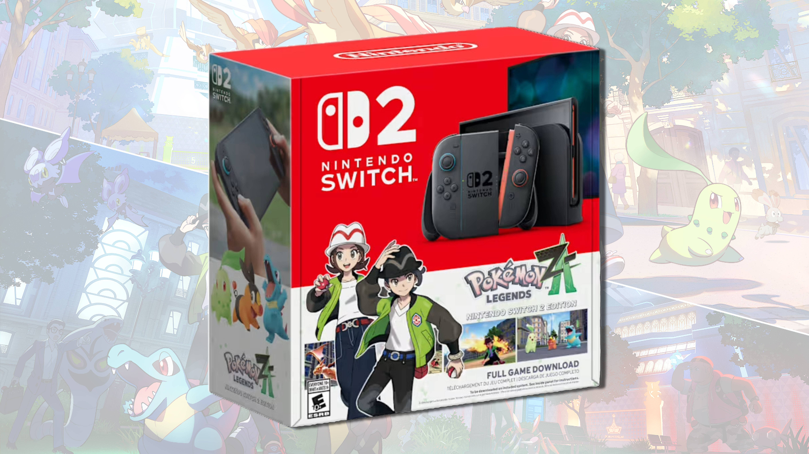

Ninetendo Switch 2 Exclusive Games
The Nintendo Switch 2 is set to launch with a stellar lineup of exclusive games that are sure to captivate gamers worldwide. Building on the success of its predecessor, the Switch 2 aims to deliver innovative gameplay experiences and stunning visuals. Here are some of the most anticipated exclusive titles for the Nintendo Switch 2:
1. Pokemon Legends: Z-A
Pokémon Legends: Z-A is shaping up to be one of the biggest Pokémon releases in years and it’s coming to both the Nintendo Switch and Switch 2. Set in a reimagined Lumiose City from the Kalos region, this action-RPG focuses on urban exploration and the long-awaited return of Mega Evolution.
- Developer: Game Freak
- Genre: Action RPG
- Release Date: Q4 2024
2. Metroid Prime 4
After years of anticipation, Metroid Prime 4 is finally set to launch exclusively on the Nintendo Switch 2. This installment promises to bring back the beloved first-person adventure gameplay while introducing new mechanics and a gripping storyline that delves deeper into Samus Aran's universe.
- Developer: Retro Studios
- Genre: First-Person Adventure
- Release Date: Mid 2025
3. Kirby Riders

Kirby Riders is an exciting new entry in the Kirby franchise that combines high-speed racing with Kirby's signature charm. Players can race through imaginative tracks, utilizing Kirby's unique abilities to gain advantages and outpace opponents.
- Developer: HAL Laboratory
- Genre: Racing
- Release Date: Early 2025